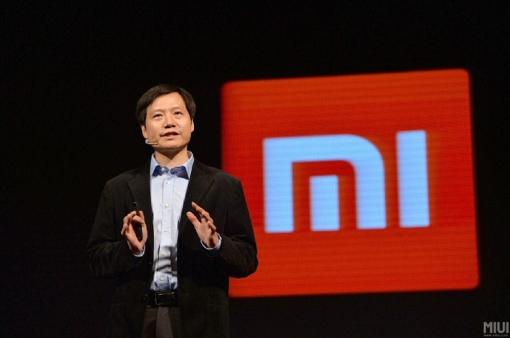
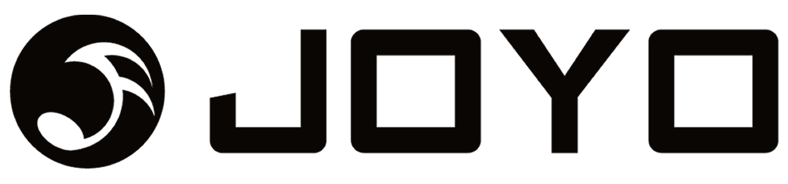
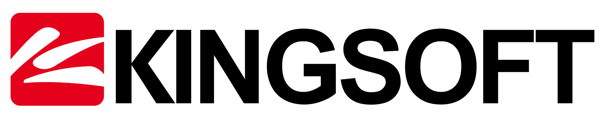

Histórico

Lei Jun
- 1992
- Trabalhou como engenheiro da Kingsoft. Seis anos mais tarde, ele se tornou CEO da companhia – foi devido ao seu trabalho como executivo que a empresa abriu capital na bolsa de valores.
- 2000
- Empresário fundou a livraria on-line Joyo.com, empreendimento que vendeu quatro anos mais tarde para a Amazon, por US$ 75 milhões.
- 2007
- Deixou a Kingsoft em 2007 e tornou-se investidor anjo. Entre as 20 empresas nas quais investiu, estão a plataforma YY e o site Vancl.com. O trabalho como investidor continua por meio da empresa de investimentos que ajudou a fundar, a Shunwei Capital.
- 2008
- Atuou como presidente da empresa de internet móvel UCWeb . Três anos depois voltou, como presidente, à Kingsoft.
- 2010
- Fundou a Xiaomi ao lado de Lin Bin, Zhou Guangping, Yan Jiahui, Li Wanqiang, Wong Kong-Kat e Hong Feng. A empresa nasceu como um grupo especializado na fabricação de produtos eletrônicos, smartphones e aplicativos.
- 2018
- Abriu IPO na Hong Kong Stock Exchange – e foi uma das maiores operações daquele ano entre as bolsas de valores.
Empresas onde Lei Jun Atuou/Atua
| 
|  |
 |
Voltar para o inicio.